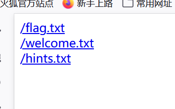
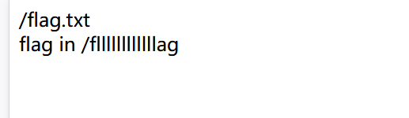
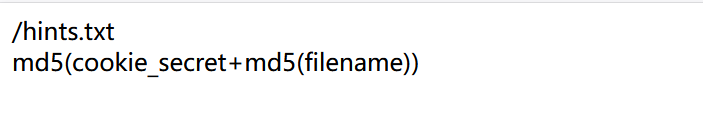
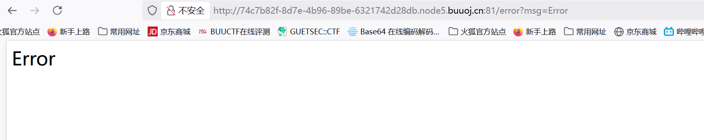
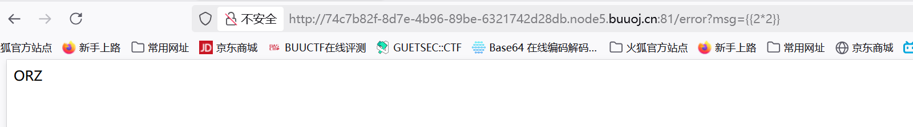
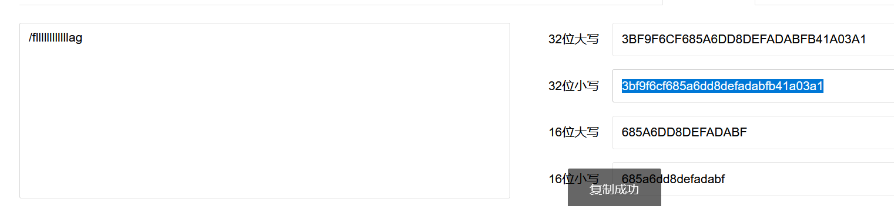
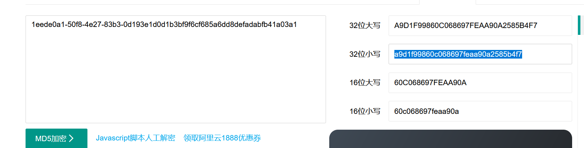
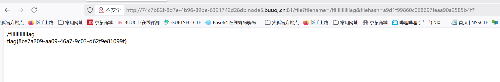

BUUCTF-Web-[护网杯 2018]easy_tornado
本文为记录个人信安小白的刷题路程，大佬勿喷，也同时希望文章能对您有所帮助
打开靶机，发现三个文件

分别点开，发现三个提示，
1.flag在/fllllllllllllag文件里

2.题目与render函数有关
3.根据URL访问文件的格式，推测访问/fllllllllllllag文件是的filehash=md5(cookie_secret+md5(/fllllllllllllag))
我们需要找到cookie_secret

尝试去掉filehash访问，
1 | /file?filename=/fllllllllllllag |
返回报错页面，

回想起提示render函数和tornado，尝试传入{{2*2}}

推测存在SSTI模板注入漏洞
render函数
render是Tornado框架中的一个核心方法，用于将动态数据渲染到HTML模板中。它通过传递参数生成不同的网页内容，
1 | self.render('template.html', variable=value) |
会将variable的值嵌入到template.html中显示
获取cookie_secret
Tornado模板渲染机制
Tornado的模板引擎在渲染时，会将双花括号{{ }}中的内容识别为Python表达式并执行：
模板中的{{变量名}}会被替换为当前作用域中该变量的值。
模板上下文默认包含handler对象，通过它可以访问请求相关的所有属性和方法。
handler.settings的特殊性
handler.settings是RequestHandler的一个属性，指向Application.settings（即Tornado应用的全局配置字典）。
这个字典包含敏感信息，如：
1 | { |
漏洞触发条件
当用户输入被直接拼接到模板中且未经过滤时，攻击者可以注入模板语法：
1 | # 危险写法：用户输入msg直接拼接到模板 |
如果用户提交msg={{handler.settings}}：
1.模板引擎会解析{{handler.settings}}。
2.从当前handler对象中获取settings属性。
3.将整个配置字典渲染到页面中，导致信息泄露。
获取cookie_secret
将该cookie_secret和MD5加密的文件名再次进行MD5加密，作为filehash



获得flag